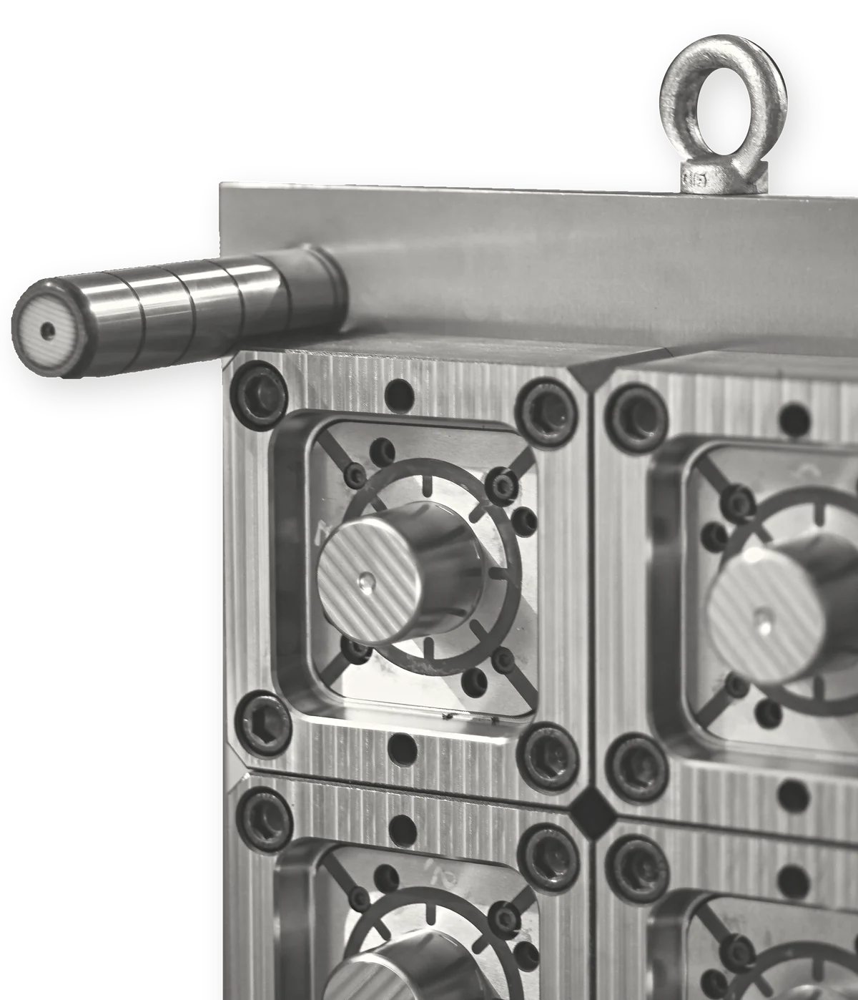
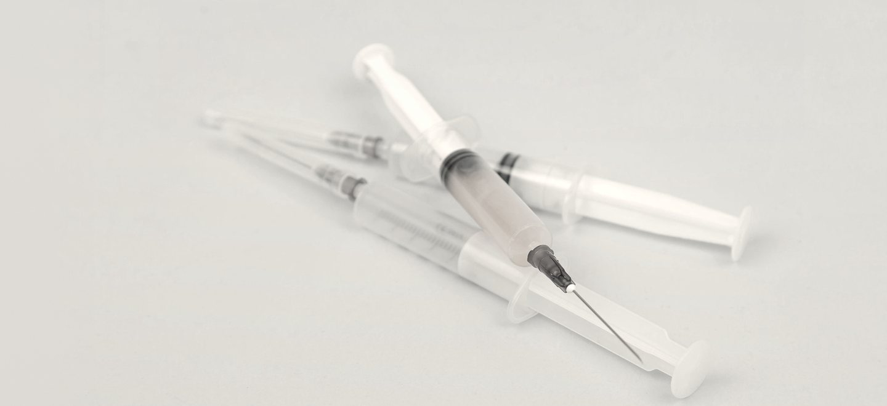
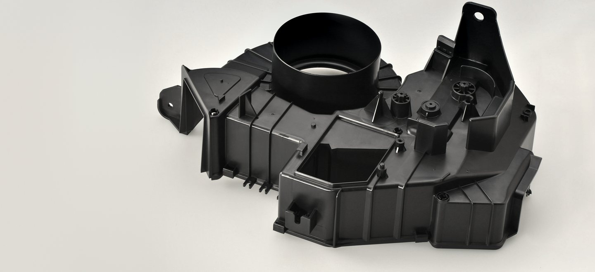
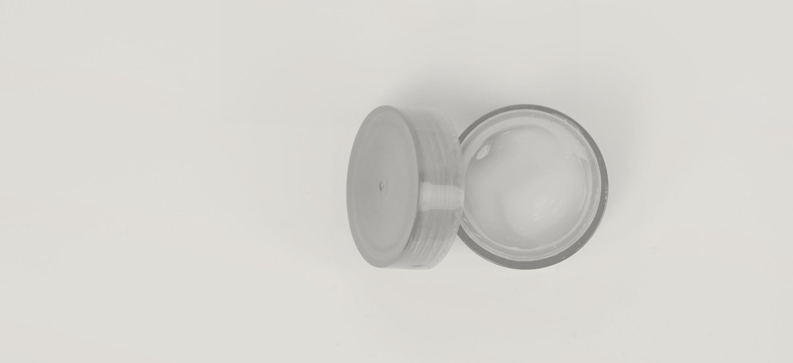
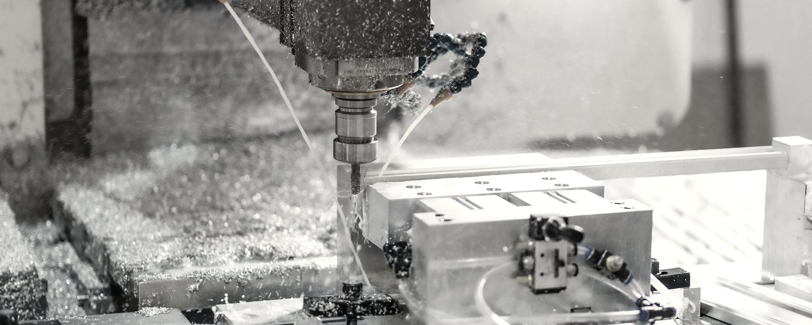
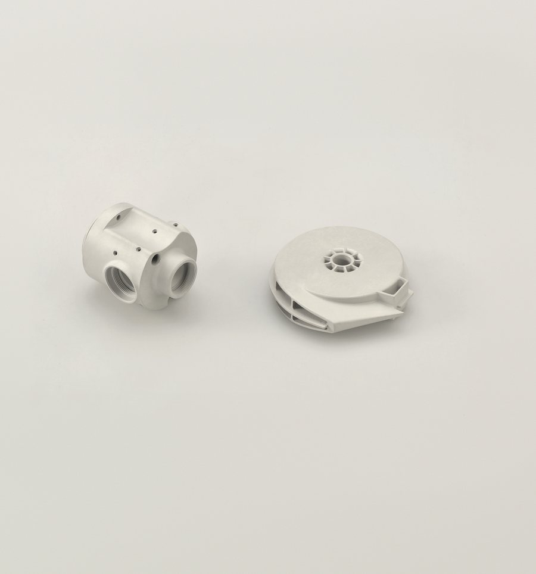

Dal disegno al collaudo
Progettiamo e costruiamo stampi a iniezione per materie plastiche, per il medicale, l'automotive e l'alimentare. Progetto e lavorazioni restano nella nostra officina.
Chiama 0444 415163
- 1Golfare
- 2Colonna di guida
- 3Quattro impronte
in un unico assieme
Dal 1985 a Grisignano di Zocco, a 50 metri dal casello A4
Stampi per i settori
Pezzi per il medicale: progetto e lavorazioni restano in officina, il prodotto che ci affidate resta riservato.
Stampi per componenti dell'automobile.
Vaschette, contenitori e secchielli a spessore sottile, anche con il sistema IML.
Foto indicative



Quattro tappe, dal prototipo alla serie
Progettazione 2D e 3D, costruzione e collaudo: ogni fase dello stampo si fa all'interno dell'azienda.

- 1
Prototipo in sinterizzazione laser
Prototipazione rapida SLS: i miglioramenti di progetto si vedono prima, con tempi e costi ridotti.
- 2
Stampo pilota
Uno stampo singolo, di test o per produzioni limitate.
- 3
Stampo definitivo multimpronte
Una matrice multipla in un unico assieme, per la serie.
- 4
Collaudo
Installazione sulla linea di produzione, test di collaudo e verifica della qualità nel tempo.
Dopo il collaudo seguiamo revisione e manutenzione degli stampi.
Tre centri di lavoro a 5 assi, fino a 3000 × 1600 mm
Undici macchine in via del Lavoro: fresatura a 3 e 5 assi, tornitura, elettroerosione a tuffo, rettifica piana e per interni ed esterni.
Le macchine in officina, per tipocorsa in mm
Centri di lavoro a 5 assi27.000 giri al minuto
Parpas Active Five 3000 3000 × 1600Parpas Active Five 2000 2000 × 1600Parpas PHS 916TT90 1600 × 900
Fresaturaa 3 assi e centro di lavoro
Parpas SL60 2000 × 750Huron VX18 centro di lavoro 2000 × 810OMV HSC 1400 alta velocità 1400 × 600OMV BFC 1300 universale CNC 1300 × 600
Elettroerosione a tuffo
ONA QX6 1000 × 600 × 500
Rettifica
Delta Maxi 1500 piana a montante mobile 1500 × 750500U per interni ed esterni
Tornitura CNC
Mazak 200 Ø 200 × 1000
Cinquanta metri dal casello, e siete arrivati
0444 415163Formuliamo offerte senza alcun impegno.
Via del Lavoro 24/26, 36040 Grisignano di Zocco (VI)
Apri la mappa
Fax 0444 414972
